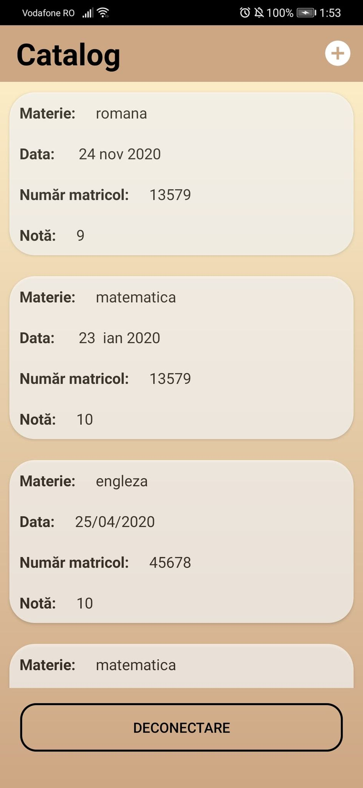

Classbook Page
After performing the Log in process, the user will be redirected to the CLASSBOOK page. Here it will have access to the following information/functionalities, depending on the type of profile:
Profile Student and Parent
Once accessed the CLASSBOOK page, users with profiles of types Elev and Parent will be able to view the following information: Subject for which the notes were added, Date of addition, Matrix number of the student and Mark itself.

To Log out on the Classbook page, press the "Disconnect" button.
Profile Teacher
Once accessed the CLASSBOOK page, users with profiles of the Professor type will be able to view the following information: Subject for which the notes were added, Date of addition, Matricol number of the student and for each student.

To add a new record, press the "+" button on the top right side.

Next, the fields "Subject", "Data", "Matrix Number" and "Mark obtained".

After filling in the settings, press the "Add Mark" button. To see the effect of the addition, press the "Back To Classbook" button .